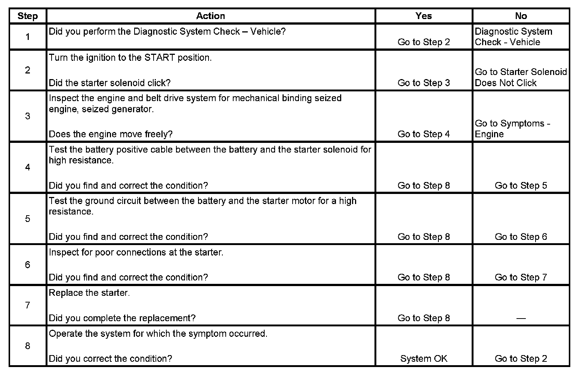

Operation CHARM
: Car repair manuals for everyone.
Home
>>
Cadillac
>>
2007
>>
Escalade ESV AWD V8-6.2L
>>
Repair and Diagnosis
>>
Starting and Charging
>>
Testing and Inspection
>>
Symptom Related Diagnostic Procedures
>>
Starter Solenoid Clicks, Engine Does Not Crank
Starter Solenoid Clicks, Engine Does Not Crank
Step 1 - Step 8:
